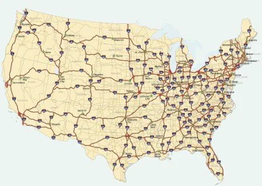
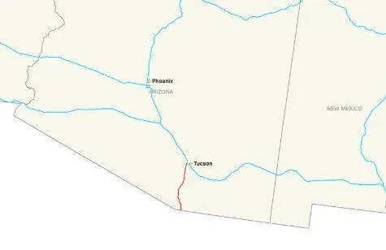
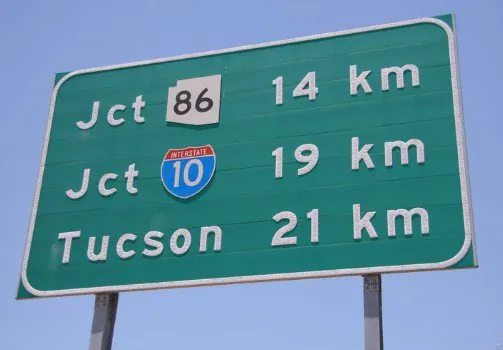
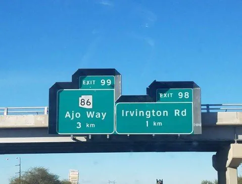
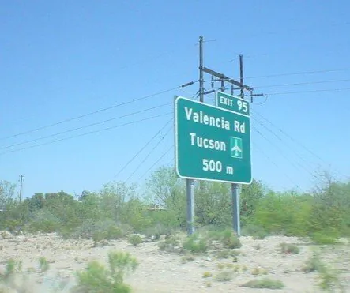
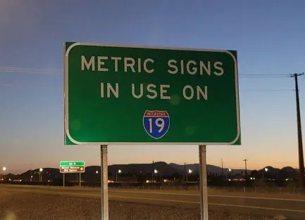
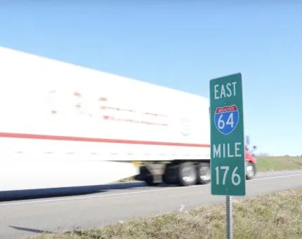

1950년대 미국은 인터스테이트 하이웨이 시스템,
주간 고속도로를 만들었고

이는 현재까지도 유지 중이다.

그리고 오늘 얘기할 건
이 주간 고속도로 중에
애리조나 주의 노갈레스와 투산을 잇는
주간고속도로 제19호선이다.
제 19호선은 노갈레스가
애리조나와 멕시코의 접경지대기 때문에
사실상 멕시코와 애리조나를 이어주는
중요한 역할을 하지만

오늘 얘기할 건 그런 이유 때문이 아닌
제 19호선이 미국의 모든 도로 중에 유일하게
미터법만을 쓰는 도로

즉, 미국에서 유일하게 옳게 된
도로이기 때문이다.
그렇다면 야드파운드를 고집하는
이 미국이란 땅에서

이 제19호선만
미터법을 고집하게 된 것 일까
일단 제19호선이 만들어진 건
1957년의 일이지만
이때는 다른 도로들처럼
마일을 사용했다고 한다.
그러다 1975년, 제럴드 포드 대통령이
미터법 전환법에 서명하게 되었고
그해 12월에 미국 미터법 위원회가
탄생했으며
이에 감명받은 애리조나 교통 위원회가

1980년, 표지판을 보수하는 과정에서
마일이 아닌 미터를 사용하게 된 것이다.

하지만 다른 곳에선 여전히 마일을 고수했고
1982년, 로널드 레이건 대통령이
미터법 전환법과 미터법 위원회를 모두
폐지시켜버리며
제19호선만 미터법을 쓰는 도로가
된 것 이었다.
암튼, 그 뒤 애리조나 교통 위원회에선
꾸준히 표지판을 다시 마일로 바꾸려 했지만
유일하게 미터법을 쓰는 도로로
유명세를 탔기에
결국 미국에서 유일하게 옳게 된 도로로
남게 되었다고 한다.
도로롱콘v6")
도로 어디감?